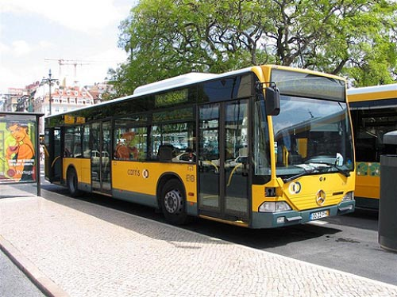
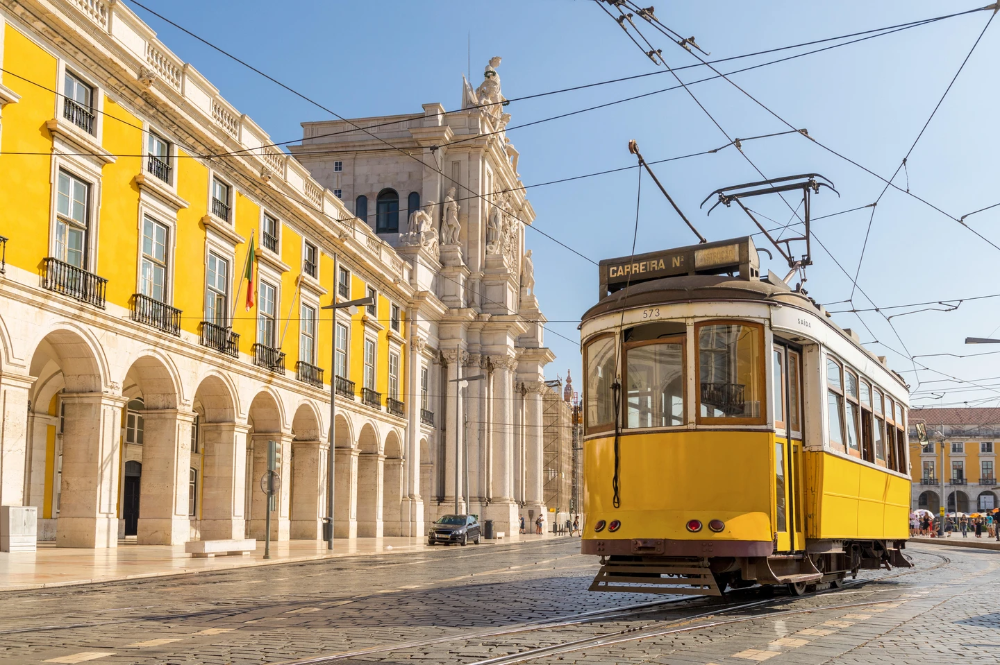

How far in advance should I book a flight from Malaysia to Portugal?
Find a great deal and save up to 36% by booking at least 61 days prior to your desired departure date,
rather than waiting until the week of travel. According to our data, there are a number of flights available
from Malaysia to Portugal within the next two weeks, with the cheapest ticket starting at RM 3,489.
When is the cheapest time to fly from Malaysia to Portugal?
Our data shows that January tends to be the cheapest month to fly to Portugal from Malaysia.
Users have commonly found prices around RM 3,420 for the month, but tickets can be as low as RM 2,760.
Due to multiple factors, prepare for potentially higher prices in June.
Emirates

RM 3,489
RM 4,329
TAP AIR Portugal

RM 3,660
RM 4,220
Malaysia Airlines

RM 4,077
RM 4,299
Portugal Travel: How to get around Portugal?
With its blue-flagged beaches, exciting cities, and protected nature parks, Portugal is the kind of place where
it’s difficult to pick only one thing to do. Fortunately, the country has an excellent and reasonably priced transportation network,
as well as plenty of two and four-wheel vehicle rental options, making getting around this Iberian wonder a breeze.

Travelling by train
Mainland Portugal has a great train system that travels daily to multiple parts of the country and within city limits. In Lisbon,
the main stations include (but are not limited to) Oriente, Santa Apolonia, and Cais do Sodré; these are the stations that take you away from the capital.
Anyone wanting to go to Sintra should hop on a train from the beautiful Rossio station, located at the Restauradores metro stop.
Train times can be purchased online. It’s also fine to wait and buy your ticket at the station before leaving. In some cases, for instance, when leaving from
rural towns, tickets are purchased on the train. Ticket prices in Portugal are fairly average for southern Europe, and crossing the country usually costs
between €20 and €30 (prices increase for high-speed trains). When travelling within a city, a one-way ticket costs less than €2.

Travelling by bus
Exploring by bus is the least expensive option and doesn’t take much longer than the train
(sometimes, the bus can actually be quicker). It’s also an easy way to reach rural centres and small villages.
The main website for finding bus routes is Rede-Expressos. The bus stations usually have an office where tickets can be purchased,
but there are situations when tickets are purchased from the driver, too. The best thing to do is ask someone where the ticket office is when reaching
the station (called a bilhetaria). Although it’s not necessary to speak Portuguese fluently to travel solo, it’s good to have a
basic understanding and to know a few key phrases.

Travelling by Tram
This is only an option when in Lisbon or Porto, but it’s certainly an unforgettable way to explore (and avoid hiking the hills).
Lisbon's trams (eléctrico) are operated by Carris along with the city's buses and elevadors. There are six tram routes
(#12, #15, #18, #24, #25 & #28) in Lisbon running along 48 km of track. The fleet consists of 48 trams,
including articulated trams (on the #15 route between Algés and the Praça da Figueira), light and traditional trams.

Travelling by Car
Of course, renting a car is always a possibility (unless you live in Portugal and already own one).
This can actually be the most expensive option when moving from one region to another, especially when tolls are taken into
consideration (make sure to have your coins handy), but it’s also a great way to see as much as possible.
Each city has their own taxi companies with pick-ups near central locations like bus and train stops. Also, applications
like Cabify make calling a car easier, cheaper (normally costing less than a taxi) and more convenient.